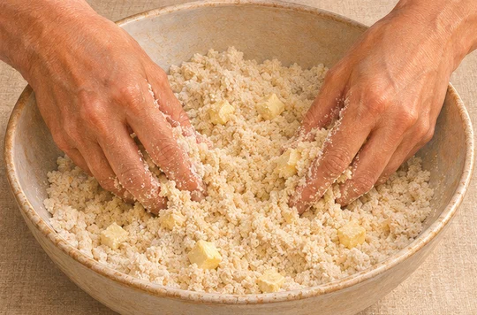
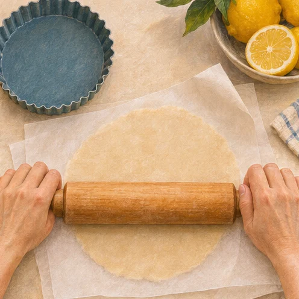
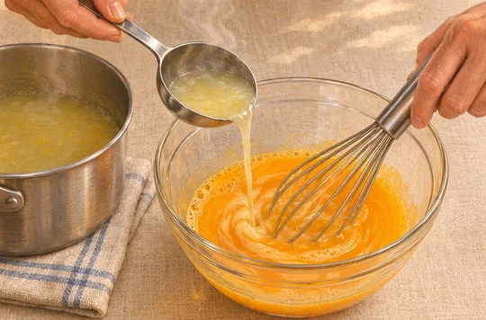
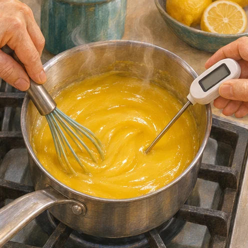
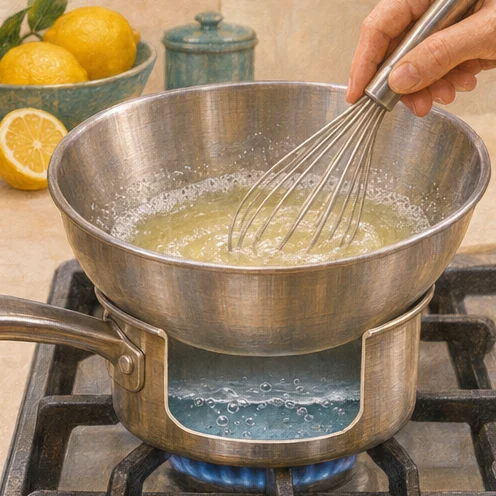
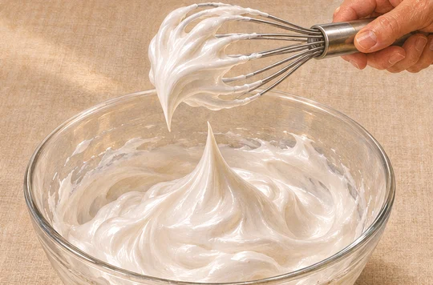
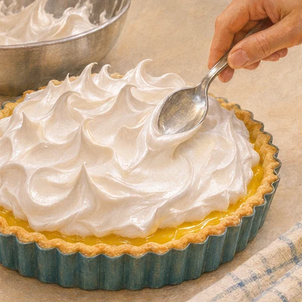
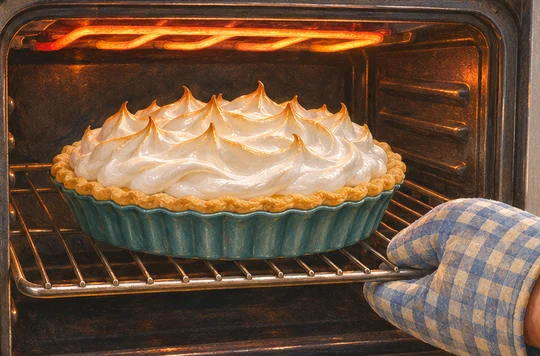
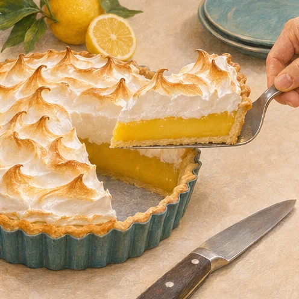

Desserts
Lemon Meringue Pie
A buttery shortcrust, a bright lemon filling and soft swirls of toasted Swiss meringue.

Total time4 hr 25 min
Cooking40 min
Chill & rest3 hr 15 min
Serves8
TimelinePrepCookingWaitChill
Pastry16–20 minat 0:00
Chill30 minat 0:18
Bake shell20–23 minat 0:48
Filling11–17 minat 1:10
Meringue14–21 minat 1:24
Cool45 minat 1:40
Chill2 hrat 2:25
Serveabout4:25
At a glance
Read across: each ingredient flows right into the next action.
Line a 23 cm loose-bottomed tart tin, about 2.5 cm deep
Heat the oven to 200°C (180°C fan) with a baking tray inside
Pastry
plain flour
175 g
unsalted butter, cold
100 g
caster sugar
12 g
egg yolk
18 g
cold water
15 g
rub to crumbs
press into a dough
roll 3 mm, line tin, chill 30 min
blind bake 15 min, then 5–8 min
Lemon filling
cornflour
24 g
caster sugar
100 g
lemon zest
6 g
fresh lemon juice
125 g
water
200 g
egg yolks
54 g
beaten whole egg
50 g
unsalted butter, cubed
85 g
whisk, boil 1 min
whisk
temper, cook to 72°C
stir in off the heat
pour into the baked shell
Swiss meringue
egg whites
120 g
caster sugar
200 g
whisk over simmering water to 72°C
beat to stiff peaks, 5–8 min
swirl over the warm filling
grill or blowtorch until golden
cool 45 min, chill 2 hr, slice
Ingredients
Weights in grams. Volume shown where a jug is quicker.
Pastry
175 gplain flour
100 gunsalted buttercold, cubed
12 gcaster sugar
18 gegg yolkabout 1 large yolk
15 gcold water15 ml
Lemon filling
125 gfresh lemon juice≈ 120 ml
6 gfinely grated lemon zest
200 gwater200 ml
24 gcornflourcornstarch
100 gcaster sugar
85 gunsalted buttercubed
54 gegg yolksabout 3 large yolks
50 gbeaten whole eggabout 1 egg
Swiss meringue
120 gegg whitesabout 4 whites
200 gcaster sugar
Method
One action, one heat setting and one picture per step. Number colours match the component. Orange pills set the heat, blue pills are waits.
-
1
Make the pastry dough
Pastry · 8–10 min- Put the flour and sugar in a bowl.
- Add the cold, cubed butter.
- Rub the butter in with your fingertips until the mix looks like fine breadcrumbs.
- Add the yolk and the cold water.
- Press gently until it comes together as a dough.

Rub cold butter into the flour and sugar until it resembles fine crumbs. -
2
Roll, line and chill
Pastry · 8–10 min + 30 min chillWaitchill 30 min- Roll the dough between two sheets of baking parchment, to about 3 mm thick.
- Line one 23 cm loose-bottomed tin, about 2.5 cm deep.
- Trim the rim.
- Patch any cracks with spare dough.
- Prick the base with a fork.
- Chill for 30 minutes.

Roll the dough between sheets of parchment to about 3 mm thick. -
3
Bake the shell
Pastry · 20–23 minHeatoven 200°C / 180°C fanWait15 min with beansWait5–8 min uncovered- Put a baking tray in the oven.
- Heat the oven to 200°C (180°C fan).
- Line the chilled pastry with baking parchment.
- Fill it to the rim with baking beans.
- Put the tin on the hot tray.
- Bake for 15 minutes.
- Lift out the parchment and beans together.
- Bake for 5–8 minutes more, until the base is dry and golden.

Lift the parchment and beads out together once the pastry sides hold their shape. -
4
Thicken the lemon base
Lemon filling · 4–6 minHeatmediumWaitbubble 1 min- Put the cornflour, sugar, zest, lemon juice and water in a saucepan.
- Whisk them together.
- Set the pan over medium heat.
- Stir until the mix is thick and bubbling.
- Simmer for 1 minute, stirring all the time.
Illustration to draw: the lemon base thickening as it bubbles -
5
Warm the eggs
Lemon filling · 2–3 min- Whisk the yolks and the whole egg together in a separate bowl.
- Add a spoonful of the hot lemon mix to the eggs.
- Whisk it in.
- Repeat with a few more spoonfuls, so the eggs warm up slowly.
- Pour the warmed eggs back into the pan.

Whisk a little of the hot lemon mixture into the eggs at a time. -
6
Cook the filling through
Lemon filling · 3–5 minReducemedium-lowWaituntil 72°C throughout- Reduce the heat to medium-low.
- Stir until the filling bubbles gently.
- Measure the temperature with a thermometer, keeping the probe off the bottom of the pan.
- Keep cooking until it reads at least 72°C all the way through.

Check the curd reaches at least 72°C. Keep the probe off the bottom. -
7
Finish the filling
Lemon filling · 2–3 minOff heattake the pan off- Take the pan off the heat.
- Add the cubed butter.
- Stir it in.
- Pour the filling into the baked shell.
Illustration to draw: butter stirred in, filling poured into the shell -
8
Warm the whites and sugar
Swiss meringue · 5–7 minHeatbarely simmering waterWait5–7 min, to 72°C- Put the egg whites and sugar in a clean heatproof bowl.
- Set the bowl over a pan of barely simmering water, leaving a gap between the bowl and the water.
- Whisk all the time, for 5–7 minutes.
- Stir the mix.
- Measure the temperature, keeping the thermometer tip off the bowl.
- Stop when the sugar has dissolved and the mix reads at least 72°C.

Whisk above barely simmering water, leaving a gap below the bowl. -
9
Whip to stiff peaks
Swiss meringue · 5–8 minOff heatlift the bowl offWaitbeat 5–8 min- Lift the bowl off the pan.
- Beat with an electric mixer for 5–8 minutes.
- Stop when the meringue is glossy and a peak stands upright.

Whip off the heat until a peak stands upright. -
10
Spread the meringue
Swiss meringue · 3–4 min- Spoon the meringue onto the warm filling.
- Spread it right to the pastry edge.
- Lift the spoon as you go to pull up wavy peaks.

Spread the meringue to the pastry edge and lift the spoon to pull up peaks. -
11
Toast the peaks
Swiss meringue · 1–2 minChoose one way to toast itAOven grillHeathot grillWait1–2 min- Preheat the grill until hot.
- Put the pie about 15 cm below the element.
- Grill for 1–2 minutes, watching all the time.
- Turn the tin as needed.
- Take it out as soon as the tips turn golden.
BKitchen blowtorchHeatblowtorch, flame movingWaituntil the tips turn golden- Put the pie on a heatproof surface.
- Hold the torch about 15 cm from the meringue.
- Sweep the flame over the peaks, keeping it moving.
- Stop when the tips turn golden.

Option A: out from under the grill as soon as the tips turn golden. -
12
Chill, then slice
Finish · 2 hr 45 minWaitcool 45 min on a rackWaitchill 2 hr- Cool the pie in its tin on a rack for about 45 minutes.
- Chill in the fridge for at least 2 hours, so the filling sets. It must be in the fridge within 2 hours of cooking.
- Lift the set pie out of the tin.
- Slice with a sharp knife.
- Wipe the knife between cuts.

Slice once the lemon layer is set and holds its shape.
Notes from the kitchen
Small habits that make this pie neater.
PastryFill the shell with baking beans right up to the rim.
FillingAdd the hot lemon mixture a spoonful at a time so the eggs warm up evenly.
MeringueSpread it right to the pastry edge.
ServingWipe the knife between cuts to keep the layers neat.
Nutrition
Estimated values per 100 g
Energy1286 kJ / 307 kcal
Fat15.1 g
of which saturates8.7 g
Carbohydrates38.3 g
of which sugars26.5 g
Fibre0.5 g
Protein4.2 g
Salt0.08 g
Allergens
Contains
Wheat (gluten)EggMilk
From the ingredient list. Check the labels on your own ingredients.
Storage
Counter
Up to 2 hoursThen it must go in the fridge.
Fridge
Up to 48 hoursKeep leftovers chilled.
Freezer
[Not tested yet]Add once someone has tried it.